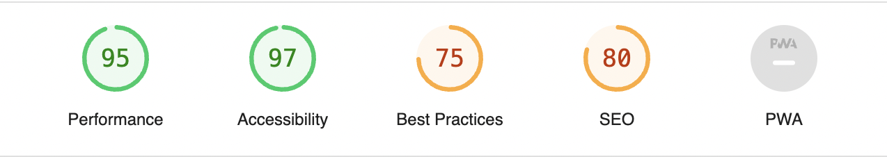
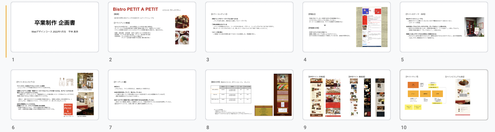

WORKS
BISTRO PETIT A PETIT Webサイト
| フロント技術 | HTML / CSS / Javascript / jQuery |
|---|---|
| 命名規則 | BEM |
| 使用プラグイン | swiper |
| 使用ソフト | Xd / Photoshop / Lightroom |
| 対応端末 | SP / TB / PC |
| 担当範囲 | 企画、ワイヤーフレーム、デザイン、写真撮影、コーディング |
| 制作期間 | 企画2週間、デザイン3週間、コーディング2週間、修正2週間 |
Lighthouse Report viewer
Topページ

レンタルサーバーはさくらインターネットです。今回は卒業制作のためSEO対策のmetaタグは入力しませんでした。 サイズの大きい画像はwebpに変換し、読み込みパフォーマンスを向上させました。
企画内容
背景
- 卒業制作として作成。実在する店舗の仮想リニューアル。
目的
- Webサイトのリニューアル。
- 料理の写真を掲載する。現在既存のサイトでは写真が1枚も掲載されていないことが問題点。
- 行ってみたいと思わせ、来店に繋げる。またフレンチというやや敷居の高いイメージを払拭し、気軽に来店できるようWebサイトに明るい印象を持たせる。
ターゲット
- お店の前をよく通り、存在は知っているがまだ来店したことがない人。
- 地元の人。
- 祝いの席で利用できるお店を探している人。
コンセプト
- 赤をメインカラーとして、内装や店内の雰囲気をWebサイトにリンクさせる。
- 明るくカジュアルな印象のサイトにする。
デザインについて
料理の写真を目立たせたいため、メインカラーの赤の使用範囲に気をつけ、サイト全体でなるべく重たく感じないように調整しました。
赤はお店の内装カラー、タイトルの赤茶はテーブル、背景のベージュは壁や店内の雰囲気を表現しています。
カジュアルで明るいデザインながらも、フレンチならではの上品さも取り入れたかったため、フォントはヒラギノ明朝を使用しました。
トップページの構成は、「ご挨拶 → 料理のこだわり →
お知らせ」となっており、
ご挨拶セクションには店舗情報ページへ、料理のこだわりセクションにはメニューページへと、詳細ページへ誘導できるようにセクションごとにリンクボタンを設置しました。
コーディングについて
各ページ タイトルのフォントサイズはスマホでのサイズを基準としたvwで実装し、閲覧するデバイスごとに最適なサイズになるようレスポンシブ実装をしました。
当初SP/PCのみのデザインカンプでしたが、タブレットと2000pxの大画面で見た時も考慮しCSSを調整しました。
カンプ通りになるよう、各セクションの幅を揃えてズレがないようピクセルパーフェクトを意識しコーディングしました。
INFORMATIONページのGoogleMapは、どのデバイスで閲覧しても常に16:9の比率を保つよう実装しました。
アルコールメニューリストはflexを入れ子にして組み合わせ、ユーザーが見やすいように整った実装を心掛けました。
(http://hirabayashi-pta.x0.to/drink.html)
特にワインリストはテキスト量が多いため飲食店サイトをたくさん見て、良いレイアウトを参考にしました。
<div class="alcohol__under-red">
<h3>赤ワイン</h3>
<div class="alcohol__under-items">
<div class="item-h"> ル・タン・デ・ジタン<br>
<span>(カリニャン)</span>
</div>
<div class="item-r"> <span>・グラス </span> <span>¥680</span> </div>
<div class="item-r"> <span>・カラフェ </span> <span>¥2,400</span> </div>
</div>
<div class="alcohol__under-items">
<div class="item-h"> ドメーヌ・ド・ムージャン<br>
<span>(メルロー、カリニャン、カベルネソーヴィニヨン、グルナッシュ、シラー)</span>
</div>
<div class="item-r"> <span>・グラス </span> <span>¥680</span> </div>
<div class="item-r"> <span>・カラフェ </span> <span>¥2,400</span> </div>
<div class="item-r"> <span>・フル</span> <span>¥3,300</span> </div>
</div>
ハンバーガーメニューが開くと店名テキストの透過率が下がってしまうため、要素の重なり順を調整した後、 jQueryが当たるとメニューが開き、同時にテキストの文字を白にする記述を加えました。
コメント
苦戦した部分はトップページとメニューページのデザインでした。 今回写真も自分で撮影したのですが、レタッチの仕上がりに納得いかず、何度もやり直しました。
コーディングを早めに終わらせ、制作締め切りに余裕を持って取り組めました。そのお陰でバリデーターチェック・ブラウザチェックにてレイアウト崩れなどを発見でき、しっかり修正を行うことができました。
反省点は同じCSSが当たる箇所には共通のclassを振り当てるなど、サイトの更新や運用考慮した記述ができれば、なお良かったと思います。今後はCSS設計を学び、実務に活かせる効率のよい記述をしていきたいです。
今回卒業制作のクライアント役としてご協力いただいたBISTRO PETIT A PETITのオーナーに完成したWebサイトをお見せすると、「半年間でここまでのクオリティのサイトを作れるようになったんだね、綺麗に作ってくれてありがとう。」とご感想をいただきました。